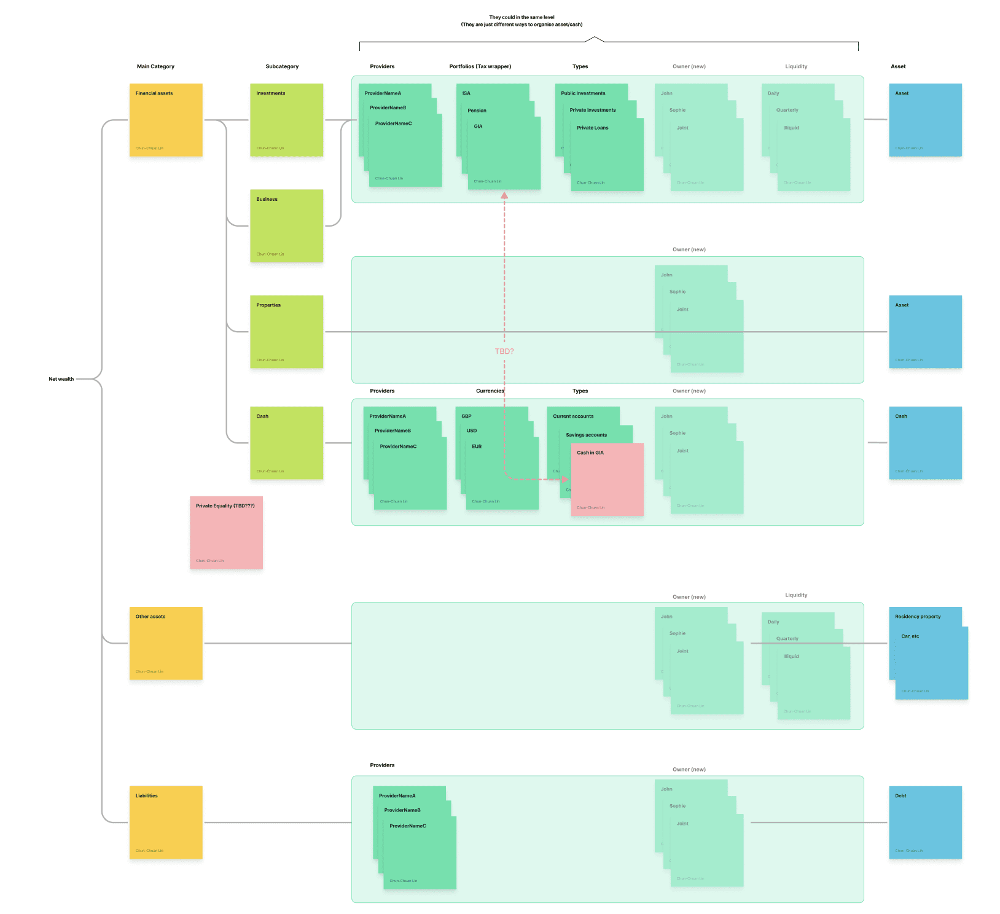
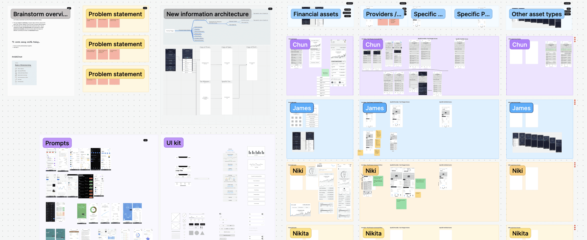
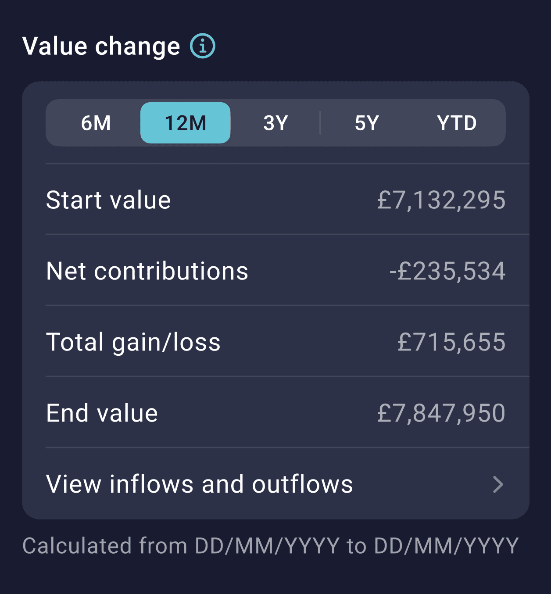
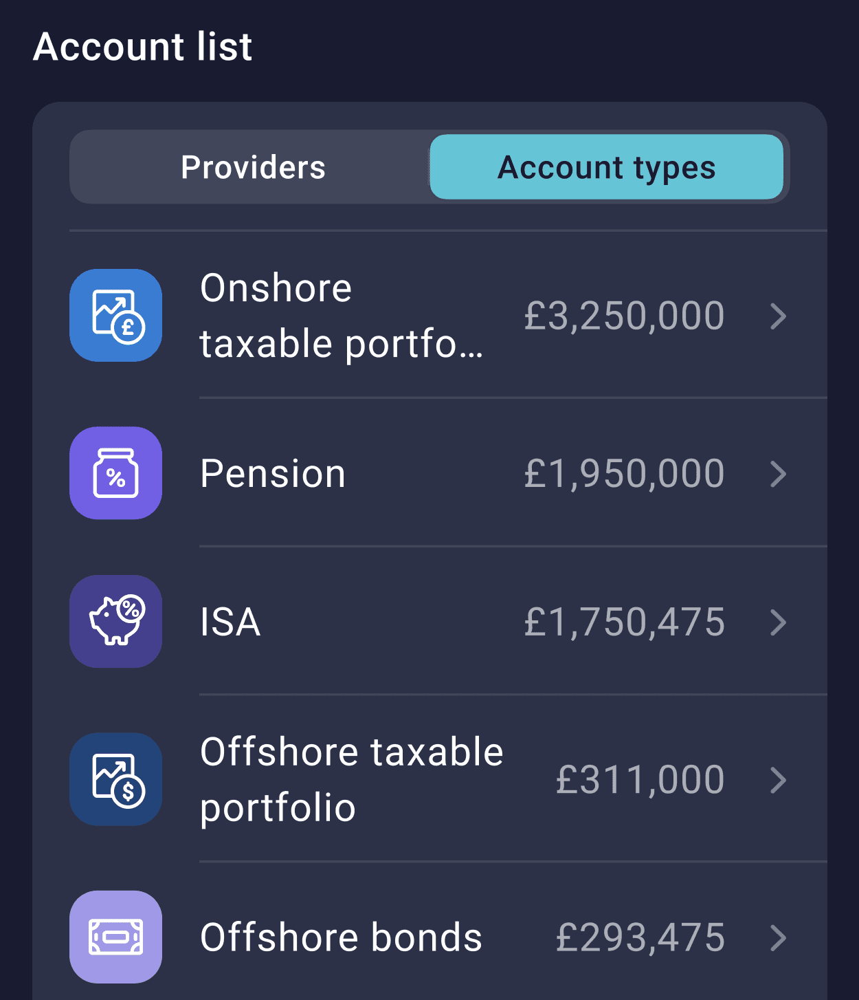
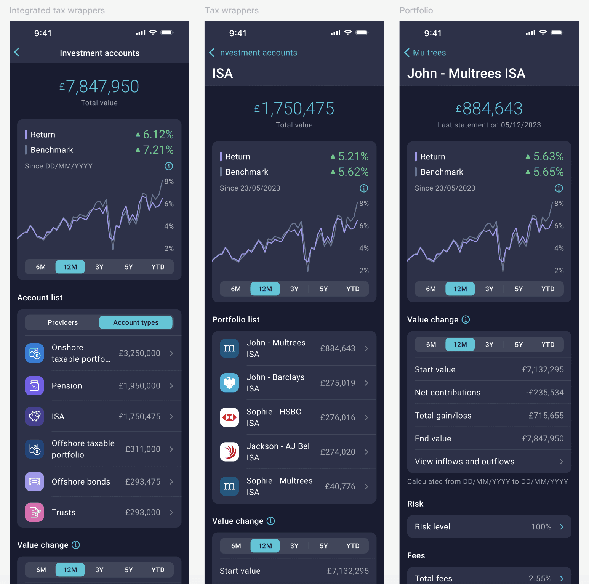
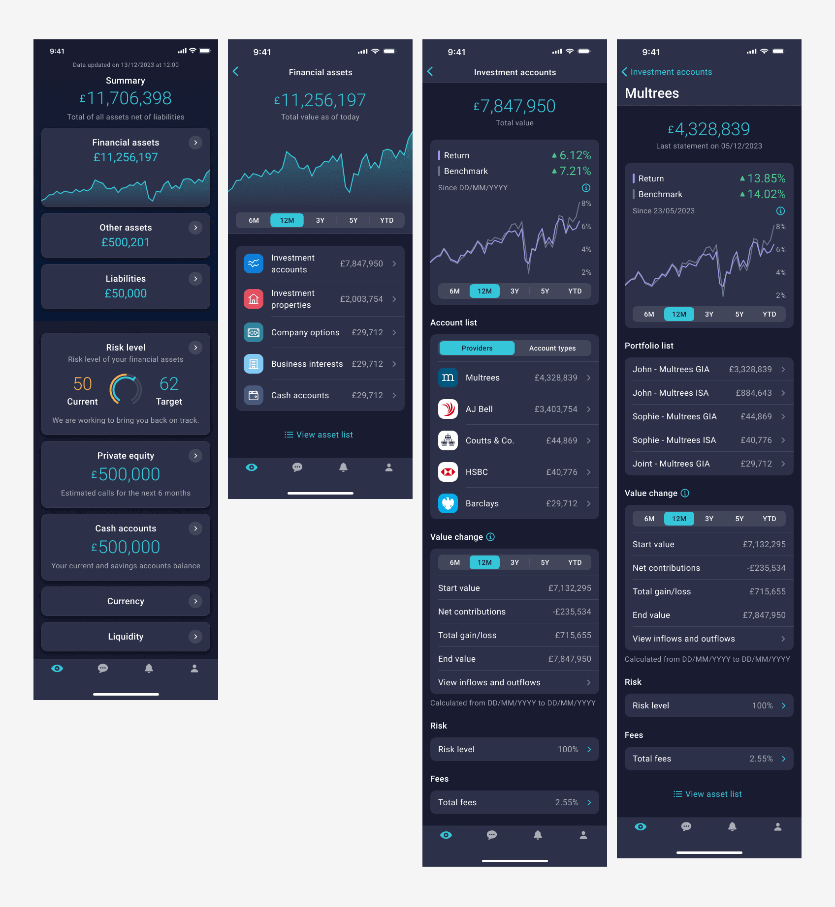
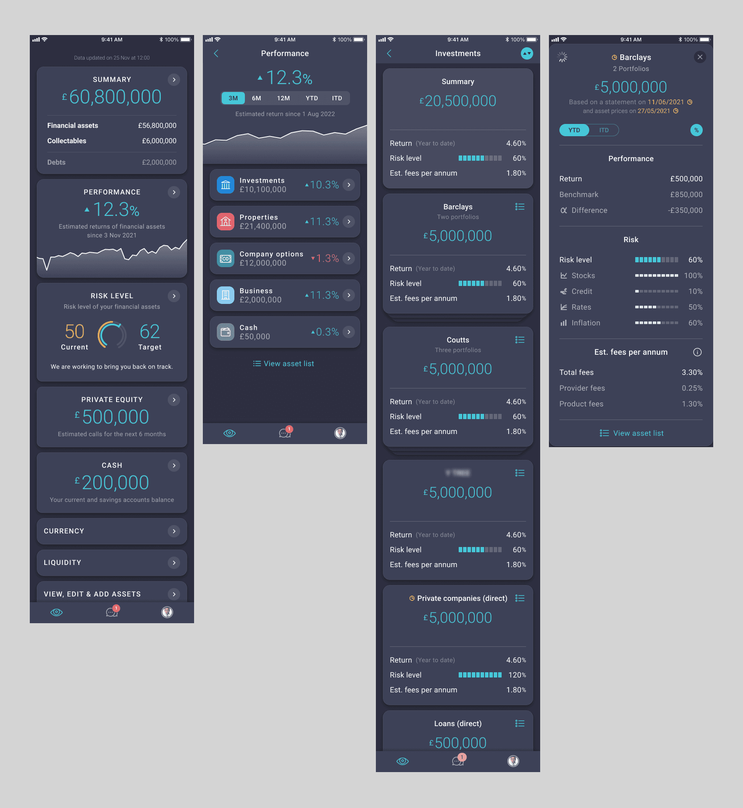

A two-phase product transformation — rebuilding the investment data foundation (v1.0), and then shaping a clearer, more intuitive wealth overview experience (v2.0).
Dec 2024 - Jun 2025 · UX and UI design
01
Overview
Context & Goal
High-net-worth clients manage complex, multi-provider and multi-currency portfolios.
Yet their most fundamental question remained unanswered:
“What happened to my money?”
The existing experience showed provider-level performance, inconsistent metrics, and fragmented screens — resulting in confusion, low confidence, and increased advisor dependency.
Our goal was to create a clear, trustworthy, and unified view of wealth that clients could understand instantly.
02
Fixingthefoundation(v1.0)
Before improving the interface, we needed to repair the structure beneath it.
Key problems
Client confusionClients saw TWRR and provider performance, not their own true gain/loss.
No wrapper structureISA / GIA / Pension were scattered across providers with no way to group or compare.
Fragmented experienceProvider, account, and portfolio screens used different layouts, fields, and terminology.
Solution
Added client-relevant performance fieldsKept TWRR for comparability, but supplemented it with clearer GBP gain/loss and consistent field placement.
Introduced wrapper IARebuilt the investment hierarchy to group assets by tax wrapper.
Standardised investment screensRebuilt provider/account/portfolio structures into a consistent, navigable, scalable system.
Information architecture
Rebuilt the information architecture to reduce fragmentation, establish clear mental models, and support long-term scalability.
Reduced duplicated categories
Clarified hierarchy between assets, accounts, and providers
Enabled future product extensions without rework

Design workshop
Facilitated a cross-functional workshop with PMs and engineers to align on the problem space, surface constraints early, and de-risk key design decisions.
Shared understanding across Product, Design, and Engineering
A scalable foundation for future features

Key features
Clear gain & loss visibility across portfolios
Simplified investment account views for faster understanding
Consistent, scalable layout system supporting future growth



Before vs After

Before

After
Outcomes
Clearer returnsClients finally saw both professional metrics and their own personal gain/loss.
Wrapper clarityISA / GIA / Pension became easy to view, compare, and understand across the entire investment structure.
Predictable experienceConsistent screen layouts reduced cognitive load and made navigation more intuitive.
Onboarding to introduce the redesigned investment model
To support the new investment foundation in v1.0, we designed a short onboarding sequence that makes the new structure easy to understand. It explains:
How we gather and consolidate client data
How investment accounts are structured
How insights can be navigated across the new hierarchy
How messaging and advice approval work
Turning a complex foundation into a simple, intuitive first impression.
03
Correctnessdoesn’tequalclarity
Fixing the investment foundation solved the inconsistency problem, but clients still couldn’t understand the story of their wealth from the Home screen. This led us to Phase 2.
04
Newproblemsemerging(v2.0)
Why the Home screen still wasn’t useful
Usage data revealed a new reality:
77% of users only tapped Financial Assets or Asset List
The Home screen served almost no financial purpose
Clients couldn’t see how their net worth had changed over time
Navigation across providers and portfolios remained slow
Even with better investment screens, clients still lacked a clear, top-level storyline about their wealth.
Strategy (v2.0)
Reframing the Home screen as a wealth narrative
We shifted the Home screen from a passive entry point to a top-level narrative layer that helps clients immediately understand:
Where they areA clear picture of net-worth and performance at a glance.
What changedSurfacing drivers that meaningfully impact wealth.
Where to go nextReducing friction across providers, account types, and portfolios.